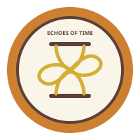

6. Gráficas vectoriales
Insignia del sitio
Esta insignia representa el flujo cíclico de la memoria. Está dibujada con código SVG, lo que garantiza su nitidez y escalabilidad.
7. la misma insignia

Esta es la misma insignia representando el flujo cíclico de la memoria.